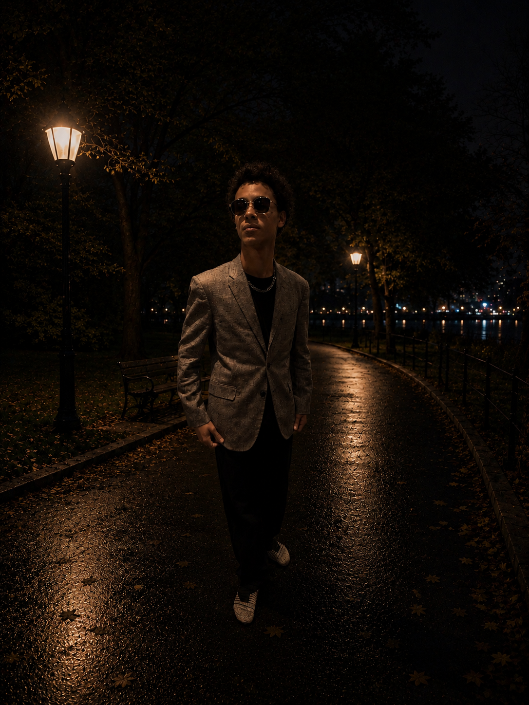
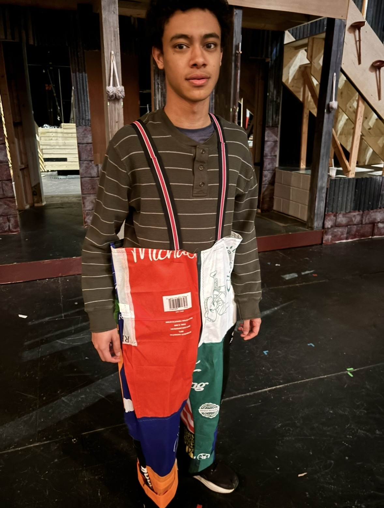

Joshua is a 17 year old playwright, composer, and actor from Brooklyn. A senior drama major at the renown LaGuardia Arts High School in Manhattan, Joshua has been playing piano since he was three years old, having studied at the Brooklyn Conservatory of Music, and has taught himself how to play other instruments and record and mix music. Joshua has performed in local and school theater productions including the roles of Simba in The Leion King, Troy in High School Musical, Lucas in The Addams Family, Davey in Newsies, and a number of roles at Brooklyn's Piper Theater over the years. He has also starred in educational segments produced for Netflix's show Ada Twist, Scientist.
Joshua has also written the book, music and lyrics to the play Colors In My Bedroom, which was workshopped and performed in July 2024 by Piper Theater Productions and featured of NY1 News and the Brooklyn Paper. Joshua then wrote the music and lyrics, and co-wrote the script for the musical Lights Out! Part One, which was performed at Laguardia High School in November 2025.
